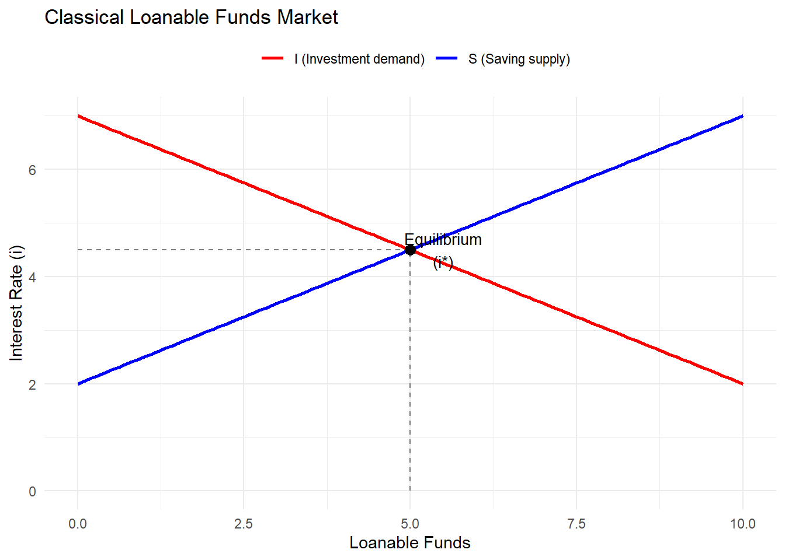

Code
library(ggplot2)Warning: package 'ggplot2' was built under R version 4.4.3Code
# Data
lf <- seq(0, 10, length.out = 100)
S <- 2 + 0.5 * lf # Saving supply
I <- 7 - 0.5 * lf # Investment demand
# Equilibrium
eq_lf <- 5
eq_i <- 4.5
# Plot
ggplot() +
geom_line(aes(x = lf, y = S, color = "S (Saving supply)"), linewidth = 1) +
geom_line(aes(x = lf, y = I, color = "I (Investment demand)"), linewidth = 1) +
annotate("point", x = eq_lf, y = eq_i, size = 3) +
geom_segment(aes(x = eq_lf, xend = eq_lf, y = 0, yend = eq_i), linetype = "dashed", alpha = 0.5) +
geom_segment(aes(x = 0, xend = eq_lf, y = eq_i, yend = eq_i), linetype = "dashed", alpha = 0.5) +
annotate("text", x = eq_lf + 0.5, y = eq_i, label = "Equilibrium\n(i*)", size = 3.5) +
scale_color_manual(values = c("S (Saving supply)" = "blue", "I (Investment demand)" = "red")) +
labs(x = "Loanable Funds", y = "Interest Rate (i)",
title = "Classical Loanable Funds Market", color = "") +
theme_minimal() +
theme(legend.position = "top")
